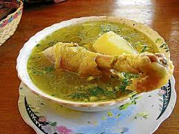

Caldo de Gallina criolla
Deléitate con nuestro caldo de gallina criolla, una deliciosa y reconfortante sopa que te transportará a los sabores caseros y tradicionales de Guatemala. Preparado con ingredientes frescos y siguiendo recetas transmitidas de generación en generación, nuestro caldo de gallina es una verdadera obra maestra culinaria.
Cada sorbo de nuestro caldo te brinda una explosión de sabores, con el rico aroma y sabor de la gallina criolla, acompañado de verduras frescas y especias tradicionales guatemaltecas. Este plato es perfecto para reconfortarte en un día frío o para disfrutar como una comida reconfortante en cualquier momento del año.'
Ya sea que estés buscando una comida reconfortante después de un largo día o simplemente quieras disfrutar de los sabores auténticos de Guatemala, nuestro caldo de gallina criolla es la elección perfecta. ¡Ven y déjanos consentirte con esta delicia culinaria hoy mismo!
esta disponible por tan solo Q45.00
